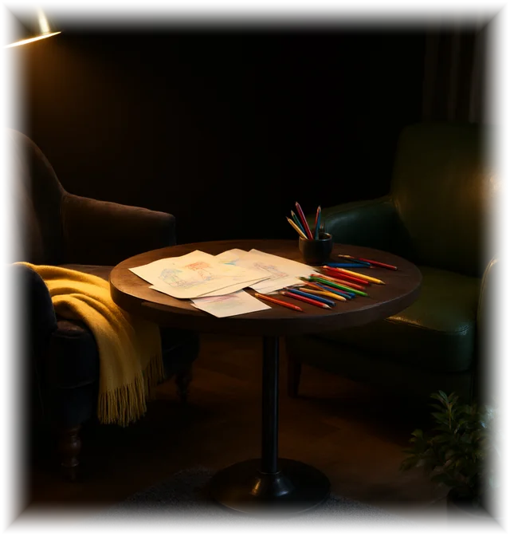

AİLƏ TERAPİYASI
Ailə Terapiyası
Cütlər və ailələr üçün sistem yanaşma — kommunikasiya, münaqişə həlli və emosional bağ bərpa edilməsi.

Cütlər və ailələr üçün sistem yanaşma — kommunikasiya, münaqişə həlli və emosional bağ bərpa edilməsi.

Əlaqə böhranı və etibar itkisi, təkrarlanan münaqişə dövrü.
Eyni mövzular üzrə təkrarlanan, çözülmə olmayan mübahisələr ailə sistemini yorur və uzaqlaşdırır.
Tərəflər bir-birini eşitmir, hisslərini ifadə edə bilmir, səssiz gərginlik yaşanır.
Xəyanət, gizli saxlanılan həqiqətlər və ya keçmişdən yaralanmalar əlaqəyə zərbə vurub.
Tərəflər ayrılıq barədə düşünür, lakin ailənin qorunub saxlana biləcəyini bilmək istəyir.
Uşaqla münasibət, nizam-intizam mövzusunda tərəflər arasında fikir ayrılığı mövcuddur.
İntimlik sahəsindəki problemlər danışılmır, bu da emosional uzaqlaşmanı dərinləşdirir.
Cütlüklə iş kişi və qadın terapevtin birgə apardığı formatda qurulur — hər iki səs eşidilir

23 illik klinik təcrübə. Ailə terapiyasında kişi tərəflə fərdi iş aparır.

Sistemli ailə terapevti. Ailə terapiyasında qadın tərəflə fərdi iş aparır.
«Sistemli Ailə Terapiyası» — iki modul, hər biri 16 dərs. Təlimçi: Samirə Rəhimova.
Tədris 3 ay davam edir: dərslər həftədə 2 dəfə, hər dərs 2 saat — əyani dərslər və ya onlayn video dərslər. Tədrisdən sonra 6 ay superviziya: həftədə 1 dəfə.
Modul 1
Kişi-qadın münasibətləri
Cütlük sistemi ilə iş: diaqnostikadan böhran dövrünə qədər. İlkin qəbul, genoqramma, rollar və sərhədlər, patternlər, xəyanət və boşanma ərəfəsində yanaşma.
Proqram üzrə cəmi 600 AZN — 3 ay tədris və 6 ay superviziya daxil; ödəniş ayda 200 AZN × 3 ay. Əyani və onlayn üçün qiymət eynidir.
Tam proqrama baxTəlimin video yazıları — hər iki təlimatçının dərsinə əvvəlcədən baxa bilərsiniz:Dr. Rəhimovun dərsi Samirə Rəhimovanın dərsi
Modul 2
Valideynlər üçün ailə terapiyası
Övladın inkişaf mərhələləri və kritik məqamlar, ailədaxili funksional pozuntular, ünsiyyət modelinin qurulması, oyun terapiyası, qorxular və aqressiya. Psixoloqlar, pedaqoqlar və valideynlər üçün.
Proqram üzrə cəmi 600 AZN — 3 ay tədris və 6 ay superviziya daxil; ödəniş ayda 200 AZN × 3 ay. Əyani və onlayn üçün qiymət eynidir.
Tam proqrama baxProqram psixoloqlar, məktəb psixoloqları, müəllimlər, koçlar, tələbələr və valideynlər üçündür; ali təhsil tələb olunmur. Kursun sonunda imtahan keçirilir və Beynəlxalq Psixoterapiya Assosiasiyasının sertifikatı verilir.
Proqramın tam qiyməti — 600 AZN: 3 ay tədris və 6 ay superviziya daxildir. Ödəniş — ayda 200 AZN × 3 ay. Əyani və onlayn format üçün qiymət eynidir.
Birgə qəbul → fərdi iş → yenidən birgə. Böhrandan sakitliyə aparan dörd mərhələ.
Cütlük hər iki mütəxəssis tərəfindən birlikdə qəbul edilir. Münaqişənin əsl mövzusu — çox vaxt mübahisə edilən mövzu deyil — üzə çıxarılır və açıq şəkildə adlandırılır.
Tərəflər ayrılır: kişi ilə Kənan Rəhimov, qadınla Samirə Rəhimova işləyir. Hər kəs öz payını partnyorun yanında deyil, təhlükəsiz şəraitdə araşdırır.
Fərdi işin nəticələri birləşdirilir. Cütlük artıq ittiham dili ilə deyil, yeni ünsiyyət aləti ilə danışır — bu, sessiyada məşq edilir.
Müsbət dəyişikliklər sabitləşdirilir. Məqsəd — münaqişəsiz ailə deyil, münaqişəni özü həll edə bilən ailə.
Bu format boşanma astanasındakı, davamlı münaqişə və dözülməz emosional gərginlik yaşayan cütlüklər üçün qurulub. Yol böhran vəziyyətindən başlayır və münasibətlərdə sakitlik və harmoniya ilə bitir.
Birgə qəbul, fərdi sessiyalar və onlayn format — qiymət mərhələdən asılıdır
Hər iki mütəxəssisin birgə apardığı sessiyalar Kənan Rəhimovun tarifi ilə hesablanır.
BirBank, TamKart, BolKart, WorldKart ilə ödəniş mümkündür. Bank köçürməsi qəbul edilir.
Ailə, cütlük və valideyn-övlad münasibətləri üzrə elmi əsaslı yazılar və şərhlər
 Məqalə · 8 dəq oxuma
Toksik Münasibətin 7 Əlaməti — Tanımaq və Çıxış
›
Məqalə · 8 dəq oxuma
Toksik Münasibətin 7 Əlaməti — Tanımaq və Çıxış
›
Terapiya və təlim barədə ən çox soruşulan suallar və dəqiq cavablar.
Tək gəlmək olar. İş çox vaxt bir tərəfin müraciəti ilə başlayır. Sistemli yanaşmada bir iştirakçının davranışının dəyişməsi bütün ailə sistemini hərəkətə gətirir. Partnyor sonradan qoşula bilər — bu, prosesi sürətləndirir, lakin şərt deyil.
Birgə ilkin qəbuldan sonra mərhələlərin sayı müəyyənləşir. Böhran vəziyyətlərində ilk nəticə adətən 4–6 sessiyadan sonra görünür; münasibətlərin bərpası daha uzun proses tələb edir. Dəqiq say ilkin qəbulda deyilir.
Cütlük terapiyasında onlayn format eyni protokolla aparılır. Fərq yalnız qiymətdədir — onlayn sessiya daha ucuzdur. Təlim proqramında isə fərq yoxdur: əyani dərslər, onlayn dərslər və video dərslər üçün qiymət eynidir.
Bəli. Fərdi mərhələdə deyilənlər partnyora avtomatik açılmır — nəyin birgə sessiyaya çıxarılacağı sizinlə razılaşdırılır. Bu, fərdi mərhələnin əsas şərtidir.
Ali təhsil tələb olunmur. Proqram psixoloqlar, məktəb psixoloqları, müəllimlər, koçlar, tələbələr və valideynlər üçündür. Psixologiya təhsili olanlar üçün imkanlar daha genişdir: məzunlar mərkəzimizdə məsləhətçilik xidməti göstərə bilər.
Kursun sonunda imtahan keçirilir və Beynəlxalq Psixoterapiya Assosiasiyasının (IPAS) sertifikatı verilir.
Bəli. Aylıq 200 AZN × 3 ay — proqramın tam qiyməti 600 AZN. BirBank, TamKart, BolKart, WorldKart ilə ödəniş və bank köçürməsi qəbul edilir.
Formu doldurun və ya WhatsApp yazın — cavab həmin gün verilir, format seçimi sizindir.
Və ya birbaşa yazın: WhatsApp
WhatsApp vasitəsilə birbaşa əlaqə saxlayın — cavab həmin gün.